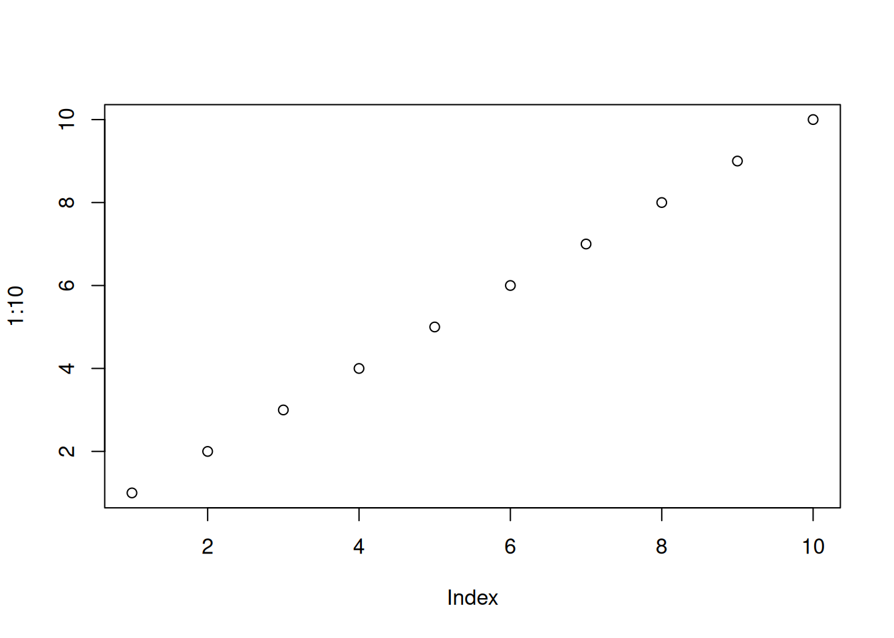

# create a vignette template
# During package development dont run this unless you back up this file
# Because it'll overwrite this file with a minimal template
# usethis::use_vignette("FullLokalRFFA")
# ==============================================================================
# PIPELINE CONFIGURATION FLAGS (Set to TRUE or FALSE)
# ==============================================================================
RUN_TESTS_BEFORE_BUILD <- FALSE # Runs unit tests early to catch code bugs fast
RUN_FULL_CHECK_AT_END <- FALSE # Runs rigorous CRAN-style checks at the very end
# ==============================================================================
# INTERACTIVE RSTUDIO ALTERNATIVES (Build Pane shortcuts / buttons):
# - Document: Click 'More' -> 'Document' (Ctrl+Shift+D / Cmd+Shift+D)
# - Test: Click 'Test' (Ctrl+Shift+T / Cmd+Shift+T)
# - Build: Click 'More' -> 'Build Source Package' or 'Build Binary Package'
# - Install: Click 'Install' (Ctrl+Shift+B / Cmd+Shift+B)
# ==============================================================================
# ==============================================================================
# WORKFLOW EXECUTION
# ==============================================================================
# STEP 1: Document functions so exports and help files are up to date
devtools::document(roclets = c('rd', 'collate', 'namespace'))
# STEP 2: Optional Early Unit Testing
# You shoud have det up tets in script "tests\testthat\test-tests.R"
# usethis::use_testthat() automatically creates the tests/testthat/ folder structure,
# adds the required testing configurations to your DESCRIPTION file,
# and sets up the master script needed to run unit tests in your package.
if (RUN_TESTS_BEFORE_BUILD) {
message("--- Running unit tests ---")
devtools::test()
}
# STEP 3: Drop active memory locks to prevent file write failures
if ("package:FullLokalRFFA" %in% search()) {
detach("package:FullLokalRFFA", unload = TRUE, character.only = TRUE)
}
# STEP 4: Purge old local build directories to prevent index corruption
unlink(c("doc", "Meta"), recursive = TRUE)
# STEP 5: Render Quarto source files down to R vignette formats
devtools::build_vignettes()
# STEP 6: Create the Source Package (.tar.gz) - perfect for CRAN or Mac/Linux users
devtools::build(binary = FALSE, args = c('--preclean'))
# STEP 7: Create the Windows Binary Package (.zip) - perfect for sharing with Windows users without Quarto
devtools::build(binary = TRUE, args = c('--preclean'))
# STEP 8: Install locally to register the fresh vignette in your own RStudio setup
devtools::install(build_vignettes = TRUE, upgrade = TRUE)
# STEP 9: Optional Comprehensive CRAN Check
# ------------------------------------------------------------------------------
# WHAT THIS STEP ACTUALLY DOES FOR YOUR VIGNETTE:
# 1. Tests Code (Purling): Runs all code chunks in an isolated session to catch errors.
# 2. Audits Setup: Checks that 'quarto' is listed in DESCRIPTION Suggests/VignetteBuilder.
# 3. Matches Metadata: Verifies %\\VignetteIndexEntry matches your actual filename.
# 4. Saves Time: '--no-build-vignettes' skips slow Quarto rendering by using Step 5 outputs.
# ------------------------------------------------------------------------------
if (RUN_FULL_CHECK_AT_END) {
message("--- Running full package check ---")
# Uses pre-built vignettes to avoid double-rendering with Quarto
devtools::check(build_args = "--no-build-vignettes", check_dir = "..")
}
# STEP 10: Force RStudio session restart to finish index generation
# Since .rs.restartR() automatically reboots your R session at the end of the script,
# your package is unloaded from memory when it finishes.
.rs.restartR()
# ==============================================================================
# VIEWING THE VIGNETTE (Run these in your console after the session restarts)
# ==============================================================================
# library(FullLokalRFFA)
# vignette("FullLokalRFFA", package = "FullLokalRFFA")
#
# Optional build site
# Option A: Build the entire website (generates HTML in docs/ and opens preview)
pkgdown::build_site()
# Option B: Quick preview of a single article/vignette without rebuilding everything
pkgdown::build_article("FullLokalRFFA")How this Package and vignette was built
1 how to configure gitbub for the package and commit
# =====================================================================
# 1. ONE-TIME SETUP PER MACHINE (Only if you haven't authenticated before)
# =====================================================================
# Run these ONLY once when setting up a new computer or if your GitHub token expires:
# usethis::create_github_token()
# gitcreds::gitcreds_set()
# =====================================================================
# 2. ONE-TIME SETUP PER PACKAGE (Run once when creating the project)
# =====================================================================
# Initialize Git locally (Run once per project)
# usethis::use_git()
# Create the remote repository on GitHub and link/push (Run once per package life)
# usethis::use_github()
# Add automated R-CMD-check GitHub Action (Run once per package life)
# usethis::use_github_action("check-standard")
# Add automated Pkgdown website hosting (Run once per package life)
# usethis::use_pkgdown_github_pages()
# =====================================================================
# 3. ROUTINE DEVELOPMENT WORKFLOW (Run frequently as you write code)
# =====================================================================
# Stage and commit your files locally (Run every time you make changes you want to save)
gert::git_add(".")
gert::git_commit("")
# Push to GitHub:
# (Run after committing whenever you want to update your online repo and
# trigger automated checks/website updates via GitHub Actions)
# gert::git_push()
#
# =====================================================================
# 4. Create the README File
# =====================================================================
# Run this in your R console while inside your package project:
#usethis::use_readme_rmd() #once then edit as needed2 Load package
library(FullLokalRFFA)
# 1. Get the secure path to the file inside the installed package
#file_path <- system.file("extdata", "my_file.csv", package = "FullLokalRFFA")
# 2. Read the file normally using the path variable
#my_data <- read.csv(file_path)
plot(1:10)